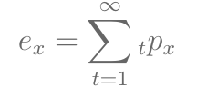
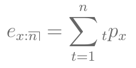
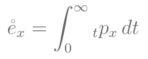
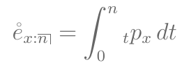
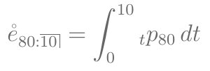

Fluxos de pagamentos probabilísticos
Tabela de Vida
criando e manipulando tabelas de vida no R
avaliando probabilidades, esperanças de vida
Suposições para idades fracionárias
Múltiplas Vidas
05 de maio de 2023
Fluxos de pagamentos probabilísticos
Tabela de Vida
criando e manipulando tabelas de vida no R
avaliando probabilidades, esperanças de vida
Suposições para idades fracionárias
Múltiplas Vidas
Na aula passada, consideramos fluxos de pagamentos determinísticos, isto é, os pagamentos periódicos são feitos com probabilidade 1.
No entanto, nas Ciências Atuariais, muitas vezes teremos que avaliar fluxos de pagamentos probabilísticos.
Pagamentos podem depender da sobrevivência ou morte de um indivíduo (ou grupo de indivíduos).
Para comparar pagamentos ou fluxos de pagamentos em tempos diferentes \(\Rightarrow\) valor presente.
Para comparar pagamentos ou fluxos de pagamentos probabilísticos \(\Rightarrow\) esperança.
Vamos denominar o valor presente desses fluxos de pagamentos como VPA - Valor Presente Atuarial.
O Valor Presente do fluxo de pagamentos probabilístico será uma variável aleatória, vai depender de quando os pagamentos são feitos.
Se os pagamentos dependem da sobrevivência ou morte de um indivíduo, vamos precisar determinar a variável aleatória \(T(x)\): tempo de vida futura de um indivíduo de idade \(x\).
O Valor Presente será uma função de \(T(x)\).
Assim, precisamos encontrar a distribuição de probabilidade de \(T(x)\).
Uma tabela de vida é uma sequência não-crescente de \(l_x\), para as idades \(x=0,1,\dots,\omega\) com a idade terminal \(\omega\).
Cada quantia \(l_x\) representa o número de indivíduos vivos à idade \(x\).
O número \(l_0\) de indivíduos vivos no tempo 0 é a raiz da tabela.
Como a tabela contém o número de sobreviventes, podemos usar os valores de \(l_x\) para calcular as probabilidades de sobrevivência.
\[{}_{t}p_x = P(T(x)>t) = \frac{l_{x+t}}{l_x} \]
\[{}_{t}q_x = 1 - {}_{t}p_x = P(T(x) \leq t) = \frac{l_x - l_{x+t}}{l_x} \]
lifecontingencies de algumas maneiras diferentes:tab1 = new("lifetable", x=seq(0,10,1),
lx=seq(from=1000,to=0,by=-100),name="Sample life table 1")
Verifique o que é o objeto tab1? Quais quantidades foram passadas (input) e quais foram criadas (output)?
Qual a classe desse objeto? Verifique o help da classe para ver os detalhes sobre esse tipo de objeto.
O que a função summary(tab1) faz? E a função plot(tab1)? Veja quais outros métodos estão implementados para essa classe.
lifecontingencies de algumas maneiras diferentes:2 . a partir das probabilidades \(p_x\) ou \(q_x\):
tab2 = probs2lifetable(probs=seq(from=0.1,to=1,by=0.1),
radix=100000,type="qx",name="Sample life table 2")
O que a função head(tab2) faz? E a função tail(tab2)?
Verifique o que é o objeto tab2? Quais quantidades foram passadas (input) e quais foram criadas (output)?
Obs: Podemos exportar um objeto lifetable para um objeto data.frame usando o comando:
## exportando para data.frame tab2.df = as(tab2, "data.frame") class(tab2.df)
## [1] "data.frame"
Podemos fazer várias análises demográficas usando as funções do pacote.
As principais probabilidades que vamos avaliar são:
\[{}_{t}p_x\]
\[{}_{t}q_x = 1 - {}_{t}p_x\]
Usando a Tabela Ilustrativa do SOA (Society of Actuaries) usada no Bowers, calcule:
a probabilidade de um indivíduo de idade 65 morrer antes de completar 85 anos;
a probabilidade de um indivíduo de idade 25 sobreviver até os 65 anos.
## carregando a tabela de vida ilustrativa do SOA
data("soa08")
Obs: Os objetos da classe lifetable são do tipo S4, um tipo de objeto mais recente do R para organizar várias informações. Note que a tabela soa08 contém alguns “slots”. Você pode acessar os slots com os comandos:
slotNames(soa08)
## [1] "x" "lx" "name"
head(soa08@lx)
## [1] 100000.00 97957.83 97826.26 97706.55 97596.74 97495.03
Vamos calcular:
## prob de (65) morrer em 20 anos (soa08@lx[soa08@x==65]-soa08@lx[soa08@x==85])/soa08@lx[soa08@x==65]
## [1] 0.6869847
qxt(soa08, 65,20)
## [1] 0.6869847
Vamos calcular:
## prob de (25) sobreviver 65 anos ##
## [1] 0.7876582


Usando a Tabela Ilustrativa do SOA, calcule:
a esperança de vida em anos completos ao nascer;
a esperança de vida em anos completos entre as idades 50 e 60.
sum(soa08@lx[soa08@x%in%(1:110)]/soa08@lx[soa08@x==0])
## [1] 71.30788
sum(soa08@lx/soa08@lx[soa08@x==0])-1
## [1] 71.30789
exn(object=soa08)
## [1] 71.30789
sum(soa08@lx[soa08@x%in%(51:60)]/soa08@lx[soa08@x==50])
## [1] 9.583979
exn(object=soa08, x=50, n=10, type="curtate")
## [1] 9.583979



Como vamos calcular essa esperança? Só temos \({}_{t}p_x\) para idades inteiras!
Precisamos assumir que as mortes ocorrem no meio do ano.
\[\frac 1 2 \cdot \left( \frac{l_{81}+l_{82}+\dots+l_{90}}{l_{80}} + \frac{l_{80}+l_{81}+\dots+l_{89}}{l_{80}} \right)\]
(sum(soa08@lx[soa08@x%in%(81:90)]/soa08@lx[soa08@x==80])+ sum(soa08@lx[soa08@x%in%(80:89)]/soa08@lx[soa08@x==80]))/2
## [1] 6.136299
exn(soa08,80,10,"complete")
## [1] 6.136299
Vamos relembrar as suposições sobre a mortalidade em idades fracionárias:
Seja \(h \geq 0\) o tempo fracionário, e \(\lfloor h \rfloor\) sua a parte inteira. A interpolação linear entre \({}_{\lfloor h \rfloor}p_x\) e \({}_{\lfloor h \rfloor +1}p_x\) é dada por:
\[{}_{h}\tilde{p}_x = \left( 1 - h + \lfloor h \rfloor \right).\,{}_{\lfloor h \rfloor}p_x + \left( h - \lfloor h \rfloor \right).\,{}_{\lfloor h \rfloor +1}p_x \]
Força de mortalidade constante:
Sabemos que \({}_{h}p_x = \exp\left( - \int_0^h \mu_{x+s} \,ds\right)\), onde \(\mu_x\) é a força de mortalidade. Assuma que \(h \in [0,1)\) e que \(\mu_{x+s}\) é constante em \([0,1)\). Então
\[{}_{h}\tilde{p}_x = \exp\left( - \int_0^h \mu_{x+s} \,ds\right) = \exp(-\mu_x \cdot h) = (p_x)^h \]
Avalie a probabilidade de uma vida de idade 80 1/4 morrer no próximo semestre, assumindo:
interpolação linear da mortalidade;
força de mortalidade constante.
qxt(object=soa08, x=80.25, t=0.5, fractional="linear")
## [1] 0.04097297
qxt(object=soa08, x=80.25, t=0.5, fractional="constant force")
## [1] 0.04099054
O pacote lifecontingencies também tem funções de múltiplas vidas implementadas.
\[T_{xy} = \min(T_x, T_y) \] \[{}_{t}p_{xy} = P(T_{xy}>t) = P(T_x > t \,\cap\, T_y > t) \]
\[T_{\overline{xy}} = \max(T_x, T_y) \] \[{}_{t}p_{\overline{xy}} = P(T_{\overline{xy}}>t) = P(T_x > t \,\cup\, T_y > t) \]
\[{}_{t}p_{xy} = {}_{t}p_x \,\cdot {}_{t}p_y \]
\[{}_{t}p_{\overline{xy}} = {}_{t}p_x + {}_{t}p_y - {}_{t}p_{xy} \]
Assuma que a Tabela Ilustrativa do SOA se aplica a duas vidas independentes de idade 65 e 60.
Calcule:
a probabilidade que ambos estarão vivos após 20 anos;
a probabilidade que pelo menos um estará vivo após 20 anos;
a esperança de vida conjunta.
Dica: veja as funções pxt, pxyzt e exyzt.
## a) prob. ambos vivos em 20 anos pxt(soa08, x=65, t=20)*pxt(soa08, x=60, t=20)
## [1] 0.1496391
pxyzt(list(soa08,soa08), x=c(65,60), t=20, status="joint")
## [1] 0.1496391
## b) prob. pelo menos um vivo em 20 anos 1 - qxt(soa08, x=65, t=20)*qxt(soa08, x=60, t=20)
## [1] 0.641433
pxyzt(list(soa08,soa08), x=c(65,60), t=20, status="last")
## [1] 0.641433
## c) esperança de vida conjunta exyzt(list(soa08,soa08), x=c(65,60), t=20, status="joint")
## [1] 11.08887